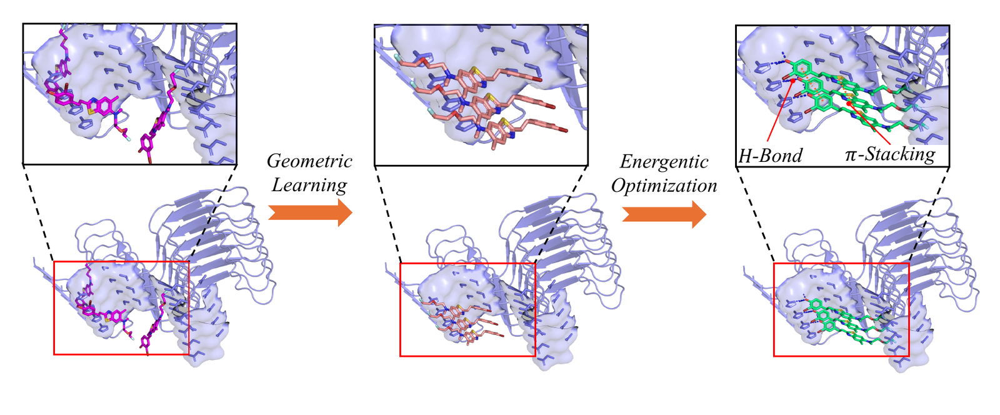
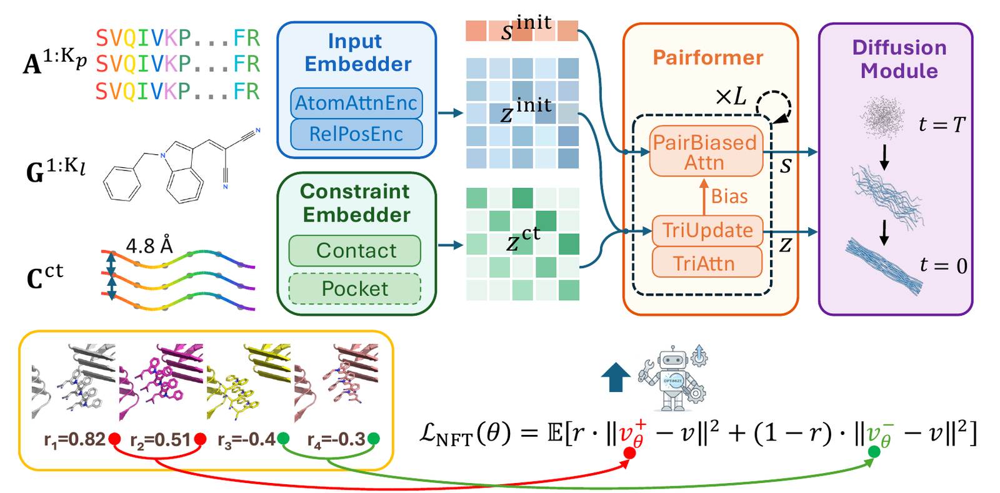
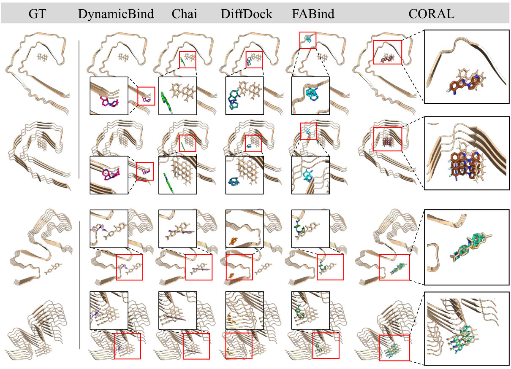

Abstract
A hallmark of neurodegenerative diseases such as Alzheimer's and Parkinson's is the aberrant aggregation of proteins into amyloid fibrils, and small molecules that selectively bind to these fibrils hold promise as diagnostics, imaging probes, and therapeutics. Predicting how such ligands bind to fibril targets, however, presents two fundamental challenges. First, resolved co-crystal structures of amyloid–ligand complexes are exceptionally scarce; even with recent advances in cryo-EM only a handful have been structurally characterized, making supervised training of docking models impractical for this target class. Second, amyloid fibrils present a binding mode fundamentally different from globular proteins: ligands intercalate into longitudinal cross-β grooves and stack cooperatively along the fibril axis, a geometry that existing docking models are not designed to capture.
To address these challenges, we present CORAL (COopeRative Amyloid Ligand docking), a reinforcement learning framework that trains a generative docking model to produce ligand pose distributions tailored to the cross-β groove geometry. Our reward explicitly incorporates cooperative ligand–ligand stacking energy alongside protein–ligand docking affinity, directly capturing the distinctive binding geometry of amyloid fibrils. We further introduce a curated evaluation set of amyloid–ligand complexes constructed from model-generated poses validated by domain experts. Experiments on both experimentally resolved structures and this evaluation set demonstrate improved pose quality and binding affinity correlation over existing docking baselines.
Method
Key observation. Amyloid grooves repeat along the fibril axis. Modeling the interactions between neighboring ligand copies gives the model a signal for this cooperative binding geometry.

1. Geometric warm-up
Approximately 2,000 curated stacking poses provide supervision for the model's diffusion, distogram, and confidence objectives, establishing a prior for groove-aligned ligand geometry.
2. Cooperative-reward refinement
Online DiffusionNFT training uses computed protein–ligand and inter-ligand energy terms. A frozen-reference velocity regularizer helps retain the warmed-up geometry during refinement.
Results
We evaluate docking on AmyDock-CryoEM (18 experimentally resolved complexes) and AmyDock-Synthetic (57 evaluation pairs with computational reference poses curated by experts). CORAL reaches a Hit@5 Å of 50.0% and 68.4%, respectively, with median RMSDs of 4.89 Å and 3.84 Å.
Docking accuracy and affinity rank correlation. Mean and median report best-pose heavy-atom RMSD in Å; Hit@5 Å is the fraction of pairs with RMSD ≤ 5 Å. αSyn-Bind contains 47 compounds with measured affinities; ρ is Spearman correlation with experimental log(Kd/M). Values are reported in the paper.
| AmyDock-CryoEM | AmyDock-Synthetic | αSyn-Bind | ||||||
|---|---|---|---|---|---|---|---|---|
| Method | Mean ↓ | Median ↓ | Hit@5 Å ↑ | Mean ↓ | Median ↓ | Hit@5 Å ↑ | ρ ↑ | p |
| DiffDock | 17.67 | 13.68 | 0.0% | 19.19 | 19.68 | 3.5% | 0.191 | 0.197 |
| DynamicBind | 26.63 | 29.02 | 0.0% | 18.90 | 17.93 | 1.8% | 0.102 | 0.544 |
| FABind | 26.50 | 24.90 | 0.0% | 30.34 | 26.87 | 0.0% | 0.157 | 0.292 |
| NeuralPLexer | 17.43 | 19.00 | 5.6% | 19.78 | 16.56 | 0.0% | −0.291 | 0.047 |
| FlowDock | 19.95 | 21.52 | 0.0% | 20.69 | 19.88 | 0.0% | 0.148 | 0.322 |
| Boltz-2 | 28.27 | 28.67 | 0.0% | 37.13 | 33.87 | 0.0% | 0.223 | 0.132 |
| Chai-1 | 19.85 | 19.92 | 0.0% | 19.40 | 16.52 | 0.0% | −0.079 | 0.597 |
| CORAL | 8.70 | 4.89 | 50.0% | 7.35 | 3.84 | 68.4% | 0.419 | 0.004 |

Analysis
Both training stages contribute. Geometric warm-up supplies a useful stacking prior; cooperative-reward refinement improves the reported pose and energy metrics. Removing the stacking reward mainly degrades the computed interaction score, while removing the stability regularizer also worsens pose accuracy.
Ablation study on AmyDock-Synthetic. Each variant changes one component of the full model. RMSD is in Å. ΔGeff is the paper's computed effective binding score (kcal/mol); lower values are better.
| RMSD ↓ | Computed ΔGeff ↓ | |||
|---|---|---|---|---|
| Variant | Mean | Median | Mean | Median |
| CORAL (full) | 7.35 | 3.84 | −2.24 | −2.44 |
| No symmetry term | 7.92 | 4.31 | −2.07 | −2.21 |
| No cooperative term | 8.21 | 4.46 | −0.78 | −0.95 |
| No stability regularizer | 12.07 | 8.13 | −1.32 | −1.45 |
| Warm-up only (no RL) | 8.67 | 5.18 | −1.41 | −1.58 |
| RL only (no warm-up) | 13.45 | 9.27 | −0.72 | −0.88 |
Molecular Dynamics Visualizations
Simulation trajectories of candidate ligand stacks along amyloid fibrils. The gallery retains the original structure and system identifiers for each clip.
More simulations (6)
BibTeX
@inproceedings{sun2026coral,
title = {{CORAL}: Learning Amyloid Fibril Ligand Docking with Cooperative Binding Rewards},
author = {Sun, Yasheng and Li, Bohan and Tao, Youqi and Schmidhuber, J{\"u}rgen},
booktitle = {Advances in Neural Information Processing Systems},
year = {2026},
url = {https://neurips.cc/virtual/2026/loc/sydney/poster/154426}
}